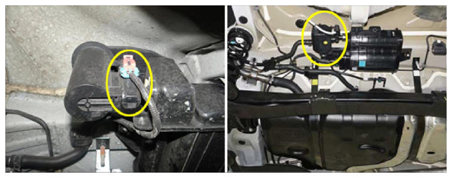

Canister Closing Valve (CCV)
WARNING: This page is about a different variant/trim than selected.
 Courtesy of HYUNDAI MOTOR AMERICA
|
Canister Close Valve (CCV) is installed on the canister ventilation line. It seals evaporative emission control system by shutting the canister from the atmosphere when leakage detecting system operates. This valve is normally open when no voltage is applied.